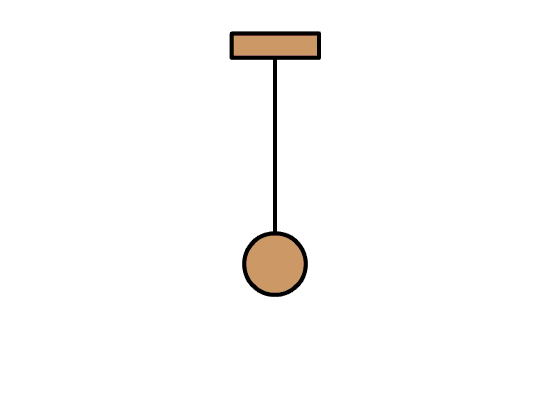

Vibraciones y Ondas
Proyecto Simulaciones Fisicas

Pendulo Fisico
Un pendulo es un objeto que oscila con una amplitud al rededor de un punto fijo, en el caso de un pendulo fisico se tiene una masa no despreciable la cual puede ser una verilla, un disco, etc.

Movimiento Amortiguado
El movimiento amortiguado es un tipo de movimiento oscilatorio en el que la amplitud de las oscilaciones disminuye gradualemnte con el tiempo hasta detenerse por completo